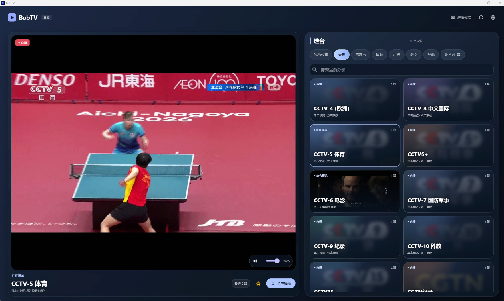

好频道，一起维护。
Windows 与 Mac 共用公共频道、分类和线路记录。新安装读取本机目录，再在后台同步经过验证的公共清单。

01 / MADE FOR WATCHING
少一点打断，多一点沉浸。
当前节目继续播放。候选频道先静音预览，
准备好后，再把下一段精彩带到眼前。
点选频道，先在卡片里静音预览。再次点选切到主播放器，也可以双击直接切换。正在看的节目，始终留在眼前。
02 / FIND YOUR FREQUENCY
电视、电影、体育、声音。03 / QUIETLY IN SYNC
那些细节，都照顾到了。Windows 与 Mac 共用公共频道、分类和线路记录。新安装读取本机目录，再在后台同步经过验证的公共清单。
参考实际播放结果与公共评分选择线路，播放停滞时尝试替代线路。可用性仍取决于节目源与网络环境。
支持全屏观看与纯音频电台。同一网络中，可向兼容的 Mac AirPlay 接收端发送播放器的音视频。
READY WHEN YOU ARE
Windows · Apple Silicon · Intel Mac